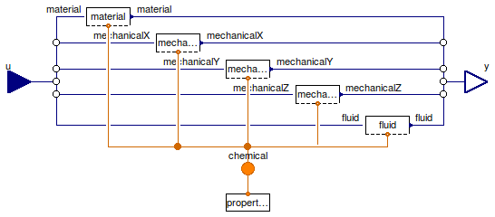

Table of Contents
- User's Guide
- Conditions
- Assemblies
- Regions
- Subregions
- Connectors
- Characteristics
- Units
- Quantities
- BaseClasses
Download
- Latest: FCSys-2.0.zip (**Please check back soon or contact kdavies4 at gmail.com.)

| Name | Description |
|---|---|
| Species | Conditions for the ChemicalOutput connector |
| Material Conditions | |
| Base classes (not for direct use) |

| Type | Name | Default | Description |
|---|---|---|---|
| Material | |||
| ConditionTypeMaterial | material | ConditionTypeMaterial.Potent... | Type of condition |
| Boolean | internalMaterial | true | Use internal specification |
| Constant | materialSpec | redeclare Modelica.Blocks.So... | Internal specification |
| X component of linear momentum | |||
| Boolean | inclLinX | true | Include |
| ConditionTypeMechanical | xCondition | ConditionTypeMechanical.Velo... | Type of condition |
| Boolean | internalLinX | true | Use internal specification |
| Constant | xSpec | redeclare Modelica.Blocks.So... | Internal specification |
| Y component of linear momentum | |||
| Boolean | inclLinY | false | Include |
| ConditionTypeMechanical | yCondition | ConditionTypeMechanical.Velo... | Type of condition |
| Boolean | internalLinY | true | Use internal specification |
| Constant | ySpec | redeclare Modelica.Blocks.So... | Internal specification |
| Z component of linear momentum | |||
| Boolean | inclLinZ | false | Include |
| ConditionTypeMechanical | zCondition | ConditionTypeMechanical.Velo... | Type of condition |
| Boolean | internalLinZ | true | Use internal specification |
| Constant | zSpec | redeclare Modelica.Blocks.So... | Internal specification |
| Enthalpy | |||
| ConditionTypeMechanical | fluidCondition | ConditionTypeFluid.EnthalpyM... | Type of condition |
| Boolean | internalFluid | true | Use internal specification |
| Constant | fluidSpec | redeclare Modelica.Blocks.So... | Internal specification |
| Type | Name | Description |
|---|---|---|
| ChemicalOutput | chemical | Single-species connector for material, with advection of linear momentum and enthalpy |
| RealInputBus | u | Bus of inputs to specify conditions |
model Species "Conditions for the ChemicalOutput connector" import FCSys.Conditions.Chemical.BaseClasses.ConditionTypeMaterial; import FCSys.Conditions.Chemical.BaseClasses.ConditionTypeMechanical; import FCSys.Conditions.Chemical.BaseClasses.ConditionTypeFluid; extends FCSys.BaseClasses.Icons.Conditions.Single; replaceable package Data = FCSys.Characteristics.BaseClasses.Characteristic constrainedby FCSys.Characteristics.BaseClasses.Characteristic "Characteristic data"; // Material parameter ConditionTypeMaterial material=ConditionTypeMaterial.PotentialPerTemperature "Type of condition"; parameter Boolean internalMaterial=true "Use internal specification";replaceable Modelica.Blocks.Sources.Constant materialSpec(k(start=Data.g(298.15 *U.K)/(298.15*U.K))) if internalMaterial constrainedby Modelica.Blocks.Interfaces.SO "Internal specification"; // X component of linear momentum parameter Boolean inclLinX=true "Include"; parameter ConditionTypeMechanical xCondition=ConditionTypeMechanical.Velocity "Type of condition"; parameter Boolean internalLinX=true "Use internal specification";replaceable Modelica.Blocks.Sources.Constant xSpec(k(start=0)) if inclLinX and internalLinX constrainedby Modelica.Blocks.Interfaces.SO "Internal specification"; // Y component of linear momentum parameter Boolean inclLinY=false "Include"; parameter ConditionTypeMechanical yCondition=ConditionTypeMechanical.Velocity "Type of condition"; parameter Boolean internalLinY=true "Use internal specification";replaceable Modelica.Blocks.Sources.Constant ySpec(k(start=0)) if inclLinY and internalLinY constrainedby Modelica.Blocks.Interfaces.SO "Internal specification"; // Z component of linear momentum parameter Boolean inclLinZ=false "Include"; parameter ConditionTypeMechanical zCondition=ConditionTypeMechanical.Velocity "Type of condition"; parameter Boolean internalLinZ=true "Use internal specification";replaceable Modelica.Blocks.Sources.Constant zSpec(k(start=0)) if inclLinZ and internalLinZ constrainedby Modelica.Blocks.Interfaces.SO "Internal specification"; // Enthalpy parameter ConditionTypeMechanical fluidCondition=ConditionTypeFluid.EnthalpyMassic "Type of condition"; parameter Boolean internalFluid=true "Use internal specification";replaceable Modelica.Blocks.Sources.Constant fluidSpec(k(start=Data.h()/Data.m)) if internalFluid constrainedby Modelica.Blocks.Interfaces.SO "Internal specification"; FCSys.Connectors.ChemicalOutput chemical( final n_lin=n_lin, final formula=Data.formula, final m=Data.m) "Single-species connector for material, with advection of linear momentum and enthalpy"; FCSys.Connectors.RealInputBus u "Bus of inputs to specify conditions"; protected final parameter Integer n_lin=countTrue({inclLinX,inclLinY,inclLinZ}) "Number of components of linear momentum";FCSys.Connectors.RealInputInternal u_material(final unit=if material == ConditionTypeMaterial.PotentialPerTemperature then "1" else "N/T") if not internalMaterial "Material signal"; FCSys.Connectors.RealInputInternal u_x(final unit="l/T") if not internalLinX and inclLinX "Signal for the x component of linear momentum"; FCSys.Connectors.RealInputInternal u_y(final unit="l/T") if not internalLinY and inclLinY "Signal for the y component of linear momentum"; FCSys.Connectors.RealInputInternal u_z(final unit="l/T") if not internalLinZ and inclLinZ "Signal for the z component of linear momentum"; FCSys.Connectors.RealInputInternal u_fluid(final unit="l2/T2") if not internalFluid "Fluid signal"; FCSys.Connectors.RealInputInternal u_material_int "Internal material signal"; FCSys.Connectors.RealInputInternal u_int[n_lin] "Internal mechanical signal"; FCSys.Connectors.RealInputInternal u_fluid_int "Internal fluid signal"; equation // Material if material == ConditionTypeMaterial.PotentialPerTemperature then chemical.muPerT = u_material_int; else chemical.Ndot = u_material_int; end if; // X component of linear momentum if inclLinX then // if xCondition == ConditionTypeMechanical.Velocity then chemical.phi[1] = u_int[1]; // end if; end if; // Y component of linear momentum if inclLinY then // if yCondition == ConditionTypeMechanical.Velocity then chemical.phi[2] = u_int[2]; // end if; end if; // Z component of linear momentum if inclLinZ then // if zCondition == ConditionTypeMechanical.Velocity then chemical.phi[3] = u_int[3]; // end if; end if; // Enthalpy // if fluidCondition == ConditionTypeFluid.EnthalpyMassic then chemical.hbar = u_fluid_int; // end if;connect(u.material, u_material); connect(u.x, u_x); connect(u.y, u_y); connect(u.z, u_z); connect(u.fluid, u_fluid); connect(u_material_int, u_material); connect(u_x, u_int[1]); connect(u_y, u_int[2]); connect(u_z, u_int[3]); connect(u_fluid, u_fluid_int); connect(materialSpec.y, u_material_int); connect(xSpec.y, u_int[1]); connect(ySpec.y, u_int[2]); connect(zSpec.y, u_int[3]); connect(fluidSpec.y, u_fluid_int); end Species;